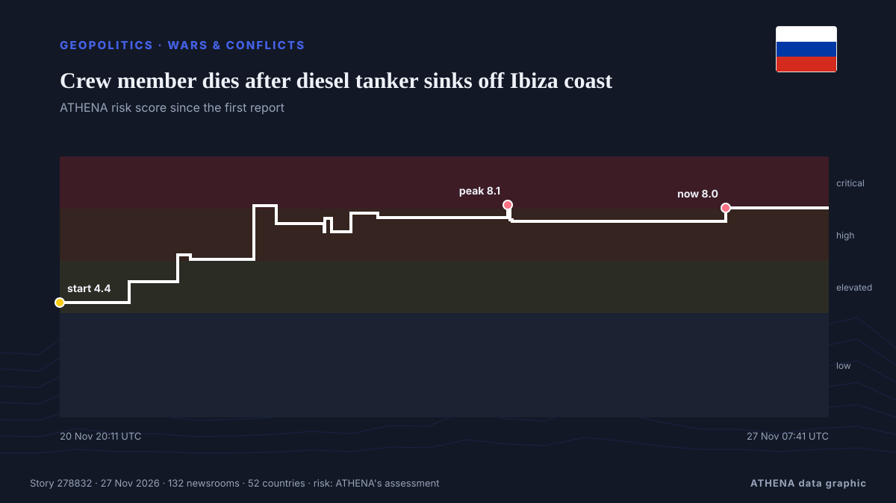

Γεωπολιτική, Πολιτική & Ασφάλεια
ΧορηγούμενοΠαρουσιάζεται από  Cybernetics and Artificial Intelligence Lab Welcome to the Cybernetics and Artificial Intelligence Laboratory, established at the Department of Business Administration of the National and Kapodistrian University of Athens. The lab is headed by Professor Dimitrios Thomakos. The lab aims to do research that can be published in top venues. Our research uses tools and methods of Artificial Intelligence, and lies in the following areas: - Forecasting - Decision making - Cyber security - Finance We are always looking forward to collaborating with exceptional students!
Cybernetics and Artificial Intelligence Lab Welcome to the Cybernetics and Artificial Intelligence Laboratory, established at the Department of Business Administration of the National and Kapodistrian University of Athens. The lab is headed by Professor Dimitrios Thomakos. The lab aims to do research that can be published in top venues. Our research uses tools and methods of Artificial Intelligence, and lies in the following areas: - Forecasting - Decision making - Cyber security - Finance We are always looking forward to collaborating with exceptional students!
Οι τίτλοι των ειδήσεων παρουσιάζονται στα αγγλικά, όπως δημοσιεύτηκαν.

Πόλεμοι & συγκρούσειςCrew member dies after diesel tanker sinks off Ibiza coast
Authorities rescued 17 crew members but one later died in hospital after a diesel tanker sank off the Spanish island of Ibiza. από DW English
| 14 Νοε | 179 |
|---|---|
| 15 Νοε | 198 |
| 16 Νοε | 276 |
| 17 Νοε | 266 |
| 18 Νοε | 250 |
| 19 Νοε | 257 |
| 20 Νοε | 231 |
| 21 Νοε | 162 |
| 22 Νοε | 155 |
| 23 Νοε | 235 |
| 24 Νοε | 207 |
| 25 Νοε | 220 |
| 26 Νοε | 164 |
| 27 Νοε | 15 |
Key Russian oil hub on fire after drone attack – video, photos
Emergency crews have responded to a fire at the Subkhankulovo oil pipeline control station in Russia's Bashkortostan after a drone strike, with no injuries reported and pumping status unconfirmed. από Ukrainska Pravda (English)
Saudi-led coalition intercepted, destroyed Houthi drone heading towards southern region
Iran vows to break US naval blockade Iran has vowed to use its armed forces to break the US naval blockade. από Khaleej Times (working feed)
2 S. Korean naval submarines under repair after accidents
SEOUL, Nov. 27 (Yonhap) -- Two of the South Korean Navy's attack submarines are ... από Yonhap (English)
Ukraine says North Korea temporarily halted missile shipments to ally Russia
It comes amid diplomatic tensions between the allies, said Ukraine’s military intelligence agency. από The Straits Times
Ukraine claims strike that damaged Russian oil refinery
The Slavyansk-on-Kuban oil refinery, one of the largest in southern Russia and part of the Slavyansk EKO group, is near the Russia-occupied Crimean peninsula and has already been attacked several… από Citizen Digital
Armenia plans full withdrawal of Russian border guards in coming years, prime minister says
Russian border guards, operating under Russia's Federal Security Service (FSB), have helped protect Armenia's borders with Turkey and Iran under a bilateral agreement signed in 1992. από Kyiv Independent
Ukraine says Benghazi drone attack not directed against Libya
Ukrainian Foreign Minister Andrii Sybiha said on Thursday that Kyiv's targeting of Russian ships in Benghazi was not directed at Libya itself. από The New Arab
Saudi-led coalition destroys 50 Iran-Backed Houthi military targets in Yemen
RIYADH, Nov 26: The Saudi-led coalition announced that it had carried out a precision military operation targeting the capabilities of Yemen's Houthi militia, destroying 50 militar... από Arab Times
Trump, NATO chief urge Russia not to expand war in Ukraine
President Trump and NATO Secretary General Mark Rutte urged Russia not to expand its war with Ukraine, as peace talks between the countries have made little headway in recent weeks and as the… από The Hill
Iran denies involvement after 2 Italian technicians killed in attack on Kuwait site
Two Italians were killed in a drone attack in Kuwait on Thursday that Italy and Kuwait blamed on Iran, although Tehran has denied any involvement. από CBC News (alternative feed)
‘What pressure?’: Salahuddin on Hasina’s reported plan to return on December 16
Minister terms ex-PM 'fugitive terrorist', says she can only return by extradition in handcuffs, under surveillance. από Express Tribune
Turkey, Saudi Arabia and Pakistan to discuss Yemen war
The foreign and defense ministers of Turkey, Saudi Arabia and Pakistan will discuss Saudi Arabia’s conflict with Iran-backed Houthi fighters in Yemen when they meet in Islamabad this week, Pakistani… από Turkish Minute
MPs to be given first vote on Andy Burnham’s new EU deal next month
A debate will be held in the Commons on December 7, with a vote expected to follow. από Evening Standard (London)
Trump on ’60 Minutes’ Reflects on Midterm Loss, Death and Forgiveness: ‘I Do Hate Some of My Enemies’
President Trump told “60 Minutes” that he blames Republican candidates and the war in Iran for the party’s midterm defeat, and acknowledged that his mass deportation policy was “too tough.” Sitting… από Variety
Israeli lawmakers advance 7 October inquiry opposed by Netanyahu
65 members voted in favour of the commission bill put forward by a lawmaker from Eisenkot's party, with 50 against. από The New Arab
Israeli Strike Kills Hamas Security Official, Family In Gaza
Medics said an Israeli airstrike hit an apartment in Deir Al-Balah in the central Gaza Strip on Thursday, killing Khaled Abu Nada, the deputy Gaza education minister, and his wife. από NDTV World
UN Warns of Growing Risk of Atrocities by Israel Against Palestinians
The United Nations has issued a warning about the increasing risk of atrocity crimes by Israel against Palestinians, highlighting the situation in the West Bank and Gaza Strip. από Arab News
One of Ireland's largest extras agencies is ending operations in the Republic over new rules
The Extras Department is based in Belfast but operates across Ireland. από TheJournal.ie
Trump says trade deal reached between the U.S. and the Philippines
President Donald Trump announced a trade deal had been reached between the U.S. and the Philippines during a banquet with Philippine President Ferdinand Marcos Jr. από NBC News (World)
Israeli defense minister: Iran developing chemical weapons
Israeli Defense Minister Israel Katz said on Tuesday that Iran is developing chemical weapons and that Israel and the United States have known about Tehran’s efforts for some time, Israeli media… από JNS
Britain moving military aircraft to hangars at night over possible drone threats, media reports say
The Times and Sky News said it included plans to use anti-drone netting to protect exposed aircraft. από The Straits Times
Cybersecurity Breach Reported At CIA And National Intelligence Director’s Office
The breach impacted open-source intelligence data. από Forbes Business
Iran says it is prepared to withstand US blockade, seeks to curb price rises
DUBAI, Nov 25 (Reuters) - Iran's first vice president said on Wednesday Tehran was not concerned about a US naval blockade as there had been a significant increase in cargo through other borders, and… από Al-Monitor
Pentagon Has Yet to Sign Off on 48 Patriot Missiles for Ukraine, Zelensky Says
President Volodymyr Zelensky said an agreement to deliver 48 Patriot interceptors remains unsigned on US Defense Secretary Pete Hegseth’s desk, despite allied funding. από Kyiv Post
Israel govt formation: Eisenkot, Lieberman join hands in bid to oust Netanyahu
Gadi Eisenkot's Yashar party has formed a coalition pact with Avigdor Lieberman's right-wing Israel Our Home party. από Times of India
Israel has turned Gaza into a 'toxic wasteland'
The new report examines the devastating environmental impacts of Israel’s attacks on the Palestinian strip. από TheJournal.ie
North Korea seeks closure of Swiss office in Pyongyang over sanctions
North Korea on Wednesday sought the closure of a Swiss diplomatic office in Pyongyang and urged its head to leave the country withi. από Mainichi (English)
Colombia rescues all hostages held at Cartagena supermarket
Colombian security forces rescued all remaining hostages unharmed after a failed robbery led to an overnight siege at a Cartagena supermarket. από UPI World News
Interactive: 720,000 Russian soldiers killed? Who are the men dying in Putin’s war
Western officials estimated in August that the Kremlin was losing 6,000 more troops per month than it could enlist. από The Independent
US Midterm Elections and South African Implications
Elizabeth Sidiropoulos discusses what the US midterm elections could mean for Congress, the cracks emerging in Donald Trump’s support base, and how economic pressures and foreign policy could shape… από SAIIA
Israel's Eisenkot clinches first coalition agreement in bid to form government
Eisenkot has until Dec 6 to form a government under a 28-day mandate. από The Straits Times
Poland Urges NATO to Down Russian Missiles Over Ukraine
Poland has asked NATO allies to consider intercepting Russian missiles over Ukraine if they are heading toward alliance territory, Bloomberg reported. από Kyiv Post
Putin says Ukraine hits Russian oil plants despite Trump's requests, promises retaliation
MOSCOW, Nov 24 - Ukraine has continued attacks on Russian oil refineries despite requests from US President Donald Trump to refrain, Russian leader Vladimir Putin said on Tuesday, pledging to… από The Straits Times
Several Russian aircraft flew into air defense zone: South Korea
SEOUL, South Korea, Nov 24, (AP): South Korea scrambled fighter jets Tuesday to chase away Russian military aircraft that flew inside the country’s air defense identification zon... από Arab Times